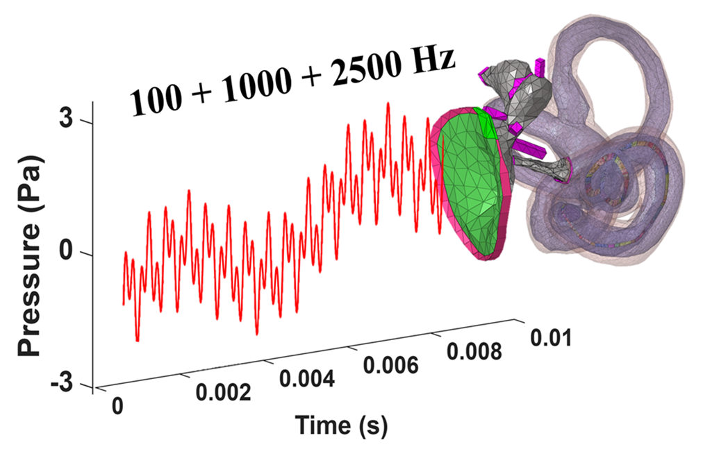
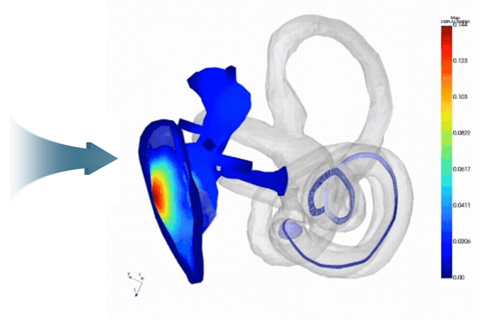
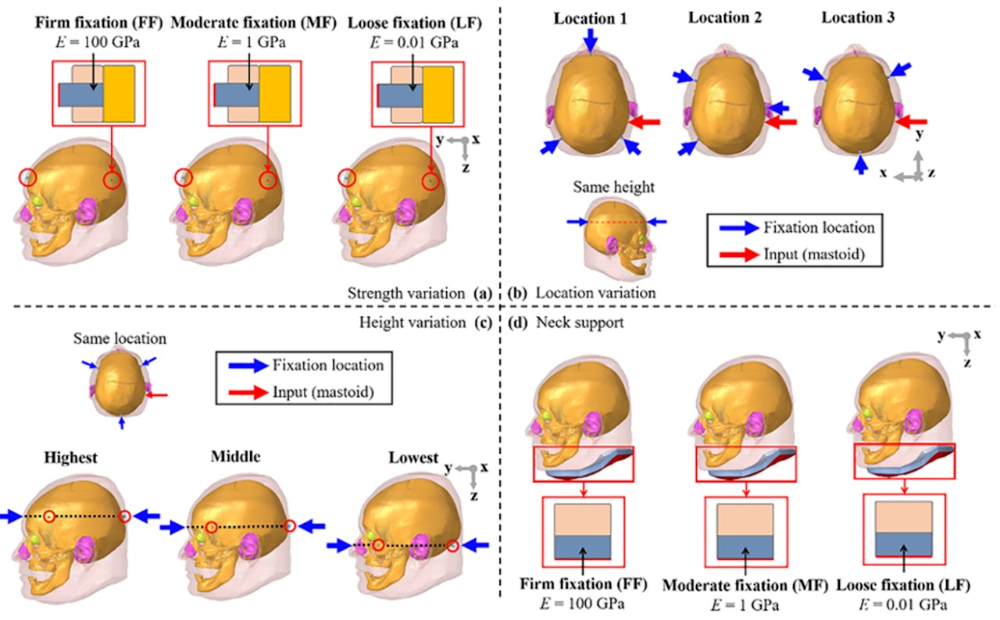
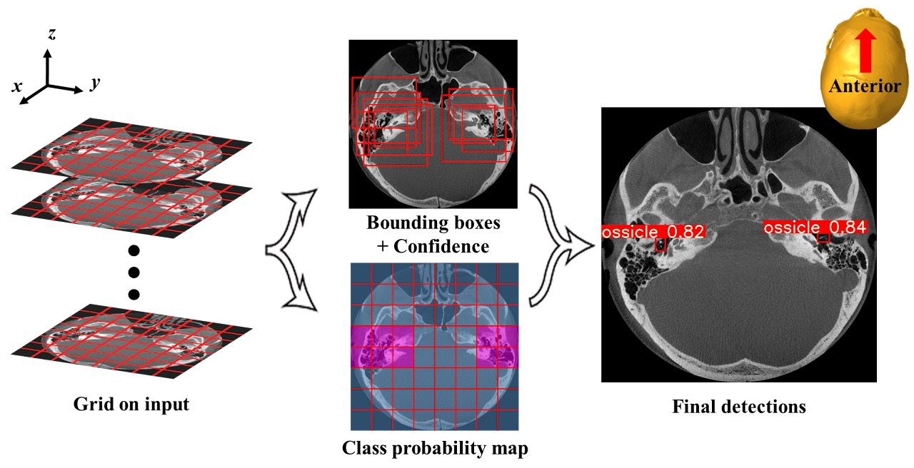
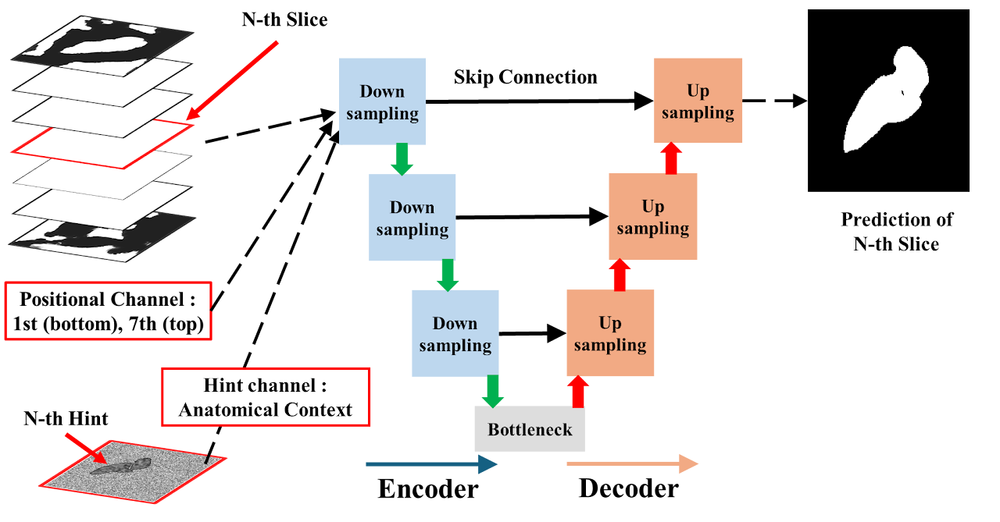
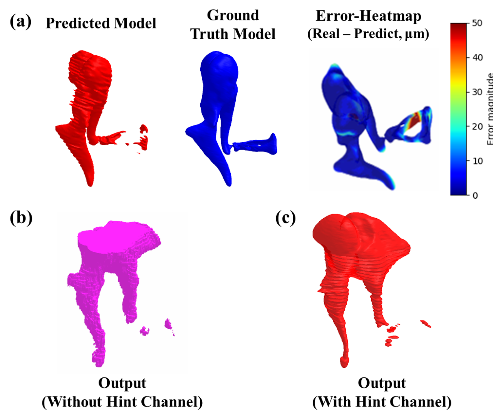
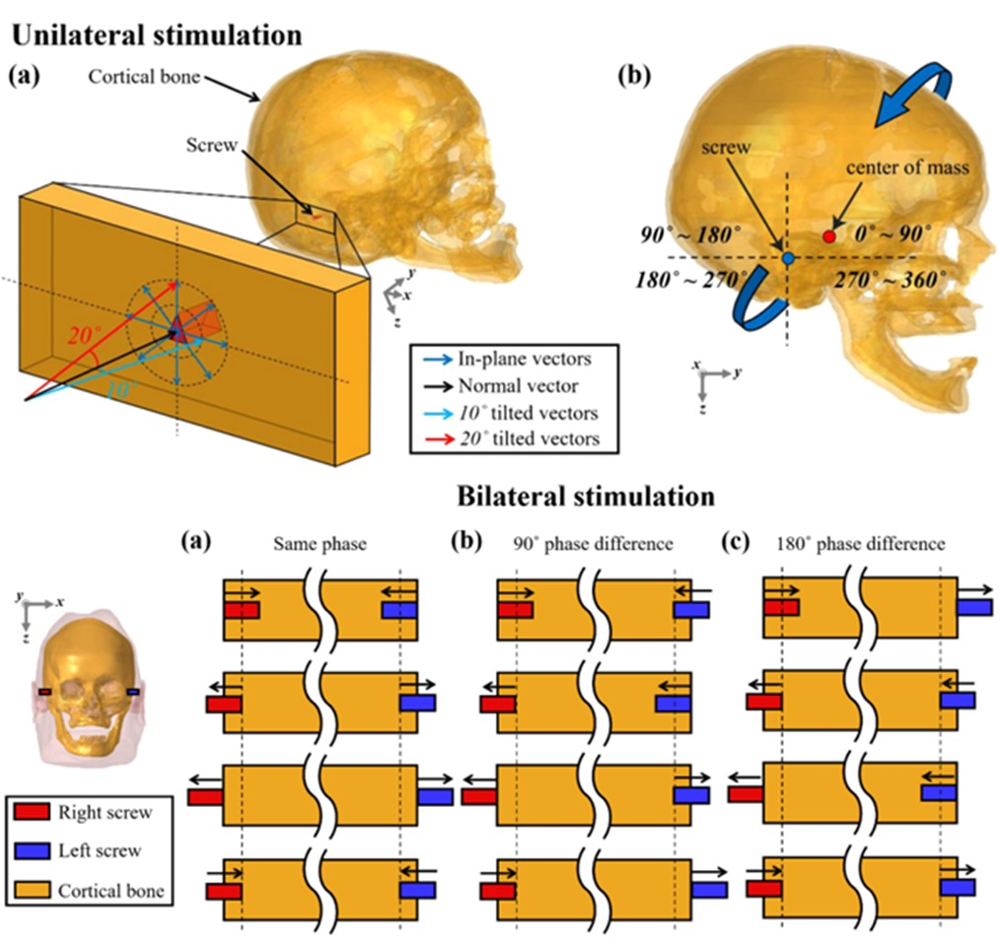
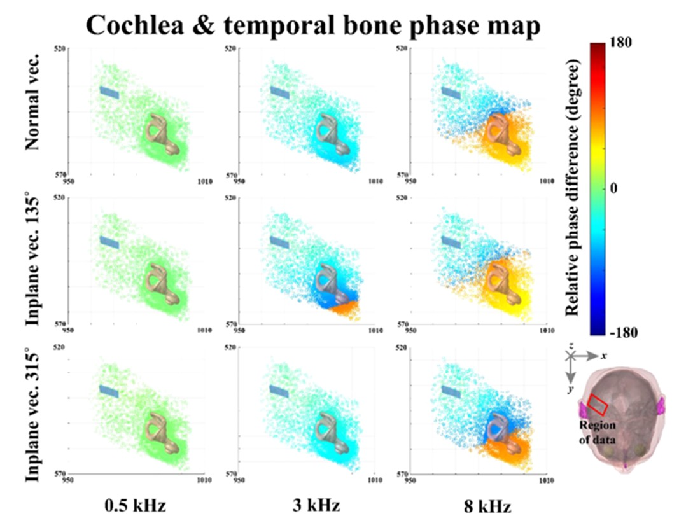

연구 · Bone Conduction
소리는 공기뿐 아니라 두개골의 진동을 통해서도 달팽이관에 전달됩니다(골전도). 우리는 사람 머리 전체를 유한요소(FE) 모델로 구현해, 진동이 뼈를 타고 청각기관까지 전해지는 과정을 시뮬레이션과 실험으로 규명합니다. 골전도 보청기·이어폰 설계와 난청 진단의 토대가 되는 연구예요.
중이·내이의 미세 구조까지 반영한 모델로, 실제 소리 자극에 대한 반응을 시간 영역에서 계산합니다.


실험에서 머리를 어떻게 고정하느냐에 따라 골전도 반응이 어떻게 달라지는지 비교·분석합니다.

저해상도 임상 CT 영상에서 딥러닝으로 이소골의 3D 형상을 자동으로 복원합니다.



진동 자극을 주는 방향과 위상이 청력에 어떤 영향을 미치는지 정량적으로 분석합니다.

